There has been discussion on the BetterGEDCOM wiki that may have created some conflict about citations. How about some examples?
SOURCES are articles and books, vital records, census and other government documents, interviews, websites, photographs or drawings, maps… and the list goes on. Our sources are the materials from which we obtain information. [EE (2007), 828]
CITATIONS are statements that identify “the source of an assertion.” [EE, 2007, 820] From CMOS Online, "Ethics, copyright laws, and courtesy to readers require authors to identify the sources of direct quotations or paraphrases and of any facts or opinions not generally known or easily checked ... Conventions for documentation vary according to scholarly discipline, the preferences of publishers and authors, and the needs of a particular work." [CMOS Online, 14.1]
Mills' genealogical citation principals are based on three essentials-evaluation, identification and description. [EE, 2007, 38] Mills also writes, citations "record details that affect the use or evaluation of that data" [EE, 2007, 142]
In terms of BetterGEDCOM, we recognize that sources can be identified, classified or categorized in different ways and that citations take three forms—(1) source list citations, (2) source label citations (aka a label or document label) and (3) reference note citations. [EE, 2007, 43]
- Source List citations are compiled into a bibliography or a list of "works cited." These lists maybe simply alphabetized or grouped and then alphabetized. The content and arrangement of a source list citation is influence by how the user want to present and sort the list.
- Source Label citations are attached to items, documents or images. The focus and level of detail (content) of a source label varies by the content or context of the item to which the citation is attached. (The focus of a citation for a full census page is different than if the focus is a particular household on that same census page.)
- Reference Note citations are developed as footnotes or endnotes, each keyed or tied to a an assertion or "fact" by a "reference" (or "note number" [CMOS Online, 14.21]). The reference note focus or level of detail is relative to both (a) the assertion from which it is referenced and (b) the particular passage in the source being referenced. In use (in text), the references or note numbers are often superscript and appear "at the end of a sentence of end of a clause." [CMOS Online, 14.21]
EXAMPLES
101 (1840 US Census) - 102 File Memo - 103 E-Mail - 104 BK-Spooner - 105 US Cen Database - 106 1850 US Census -107 1850 US Census (household) - 108 Iowa St Cen Database - 109 1856 Iowa St Census - 110 1860 US Census -
111 1870 US Census - 112 1880 US Census - 113 MV Cemetery 1 - 114 Date Calculator 1 - 115 Hwy 64 Cem - 116 Death Register -
118 Date Calculator 2 - 119 Iowa Deaths - 120 VR Hardwick - 121 VR Hardwick 2 - 122 Michigan Marriages -
101 Example-1840 U.S. census
Principle references: EE, 2007, pp. 43, 67-71, 240 [QuickCheck example, 1850], 257-258 [census source lists], 257 [placement of person of interest], 265 [use of generic titles for U.S. census], 268-272 [early census and online images], 275 [1840 example]. See also TGF-L, "... help with source list hierarchy ..."(a) User's source list citations examples (working file)
Ohio. Williams County. 1840 U.S. census. Digital image(s). Ancestry.com. http://www.ancestry.com : 2005.U.S. Ohio. Williams County. 1840 census. Digital image(s). Ancestry.com. http://www.ancestry.com : 2005.
Census. 1840. U.S. Ohio. Williams County. Digital image(s). Ancestry.com. http://www.ancestry.com : 2005.
(b) A user's source Label citation (working file)
1840 U.S. census, Williams County, Ohio, St. Joseph Township, p. 219 (stamped on right page); digital image(s), Ancestry.com (http://www.ancestry.com : accessed 3 August 2005), citing National Archives microfilm publication M704, roll 433.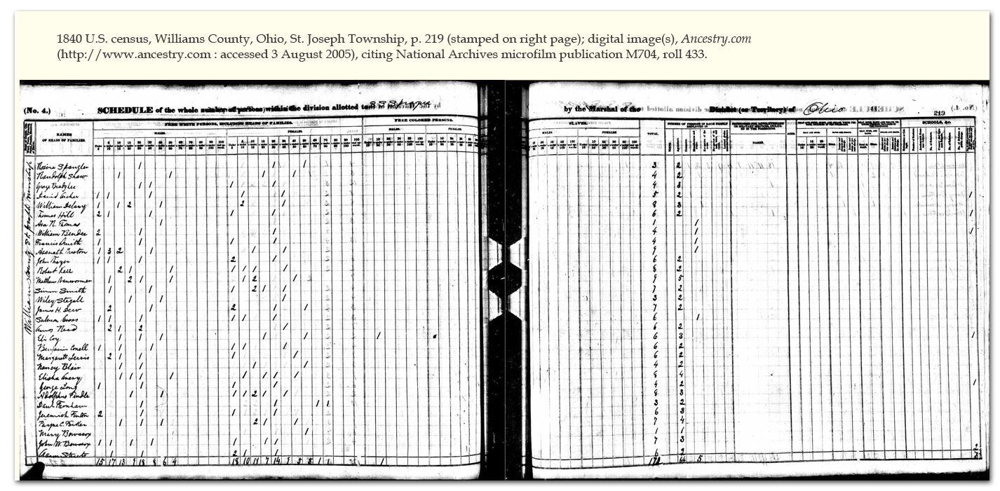
(c) User's options for full reference note (working file)
An actual working file citation would depend on the assertion from which the citation was referenced. For the residence of Asa Thomas at 1840, it might read:1. 1840 U.S. census, Williams County, Ohio, St. Joseph Township, p. 219 (stamped on right page), line 7, Asa Thomas household; digital image(s), Ancestry.com (http://www.ancestry.com : accessed 3 August 2005), citing National Archives microfilm publication M704, roll 433.
As to other working file assertions, a reference note might read:
2. 1840 U.S. census, Williams County, Ohio, St. Joseph Township, p. 219 (stamped on right page), line 7, Asa Thomas household; digital image(s), Ancestry.com (http://www.ancestry.com : accessed 3 August 2005), citing National Archives microfilm publication M704, roll 433. Asa's son, Elihu R. (separately, b. 1839) was not included in the household tally; see the entry at line 10 for Asenath Preston, Elihu's mother.
(d) Database design and BetterGEDCOM implications.
102 Example-File memorandum 1840 census
Principle references: EE, 2007, p. 113 [QuickCheck for private holdings; collection as lead element], 121 [3.8, Collection as lead element], 156-157 ["Research Files & Reports..."].(a) Source List Entry (working file)
Preston-Butler research files. Privately held by compiler, Arizona.Composer, GeneJ. File memorandum concerning 1840 U.S. Census for Asenath Preston and Asa Thomas, 16 Feb 2006.
(b) User's source label (working file)
GeneJ Composer, file memorandum concerning 1840 U.S. census of Asenath Preston and Asa Thomas, 16 Feb 2006; Preston-Butler research files; privately held by compiler, Arizona.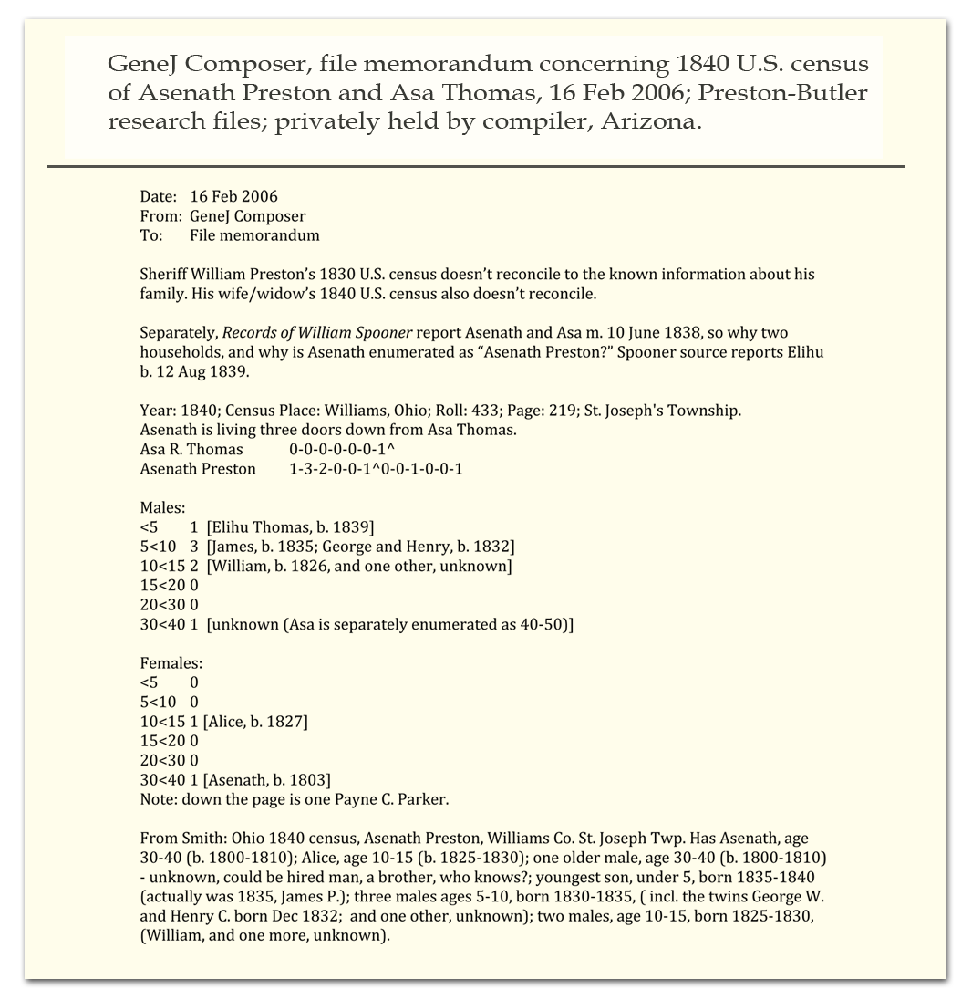
(c) User full reference note (working file)
An actual working file citation would depend on the assertion from which the citation was referenced. The example below might be reference from a database conflict tag:3. GeneJ Composer, file memorandum concerning 1840 U.S. census of Asenath Preston and Asa Thomas, 16 Feb 2006; Preston-Butler research files; privately held by compiler, Arizona. If Asenath (Butler) Preston and Asa Thomas married in 1838 (Records of William Spooner...), why is she enumerated separately as Asenath Preston? Note the two extra men in the household tally, one ae 10-15; one ae 30-40.
(d) Database design and BetterGEDCOM implications
103 Example-Personal E-mail
Principle references: EE, 2007, p. 113 [QuickCheck for E-mail], 153-154 [Writer as lead and private address](a) Source list citations (working file)
E-mail archive. Privately held by GeneJ, Arizona.Preston, Gene, Michigan. "Wm Preston' #7 Estate." 11 Sept 2008. E-mail to GeneJ, Arizona. Privately held by recipient.
Preston, Gene, Michigan. E-mail from [(E-address for private use),] to GeneJ. "Wm Preston' #7's Estate." 11 Sept 2008. Privately held by GeneJ, Arizona.
(b) Source Label citation (working file)
Gene Preston, Michigan, to GeneJ, E-mail, 11 Sept 2008, “Wm. Preston’ #7’s Estate”; E-mail archive, privately held by GeneJ, Arizona.
(c) Reference note (working file)
An actual working file citation would depend on the assertion from which the citation was referenced. The example below might be reference to a marriage tag:4. Gene Preston, Michigan, to GeneJ, “Wm. Preston’ #7’s Estate,” E-mail dated 11 Sept 2008; E-mail archive, privately held by GeneJ, Arizona. Asa and Asenath presumably married before 18 June 1845; deed then dated gives her surname as Thomas.
(d) Database design and BetterGEDCOM implications (working file)
104-Example-Records of William Spooner ...
Principle references: EE, 2007, p. 662 [Online publication]Note: The title page suggests this is a multivolume work, but Library of Congress Online Catalog appears to report only one volume, published 1883.
(a) Source list citations (working file)
Spooner, Thomas. Records of William Spooner, of Plymouth, Mass., and his descendants. 1883. Digital image(s). Internet Archive. http://www.archive.org: 2011.(b) Source Label citation (working file)
Thomas Spooner, Records of William Spooner, of Plymouth, Mass., and his descendants (1883) 1:246, 252-253; digital images, Internet Archive (http://www.archive.org : accessed 11 July 2011).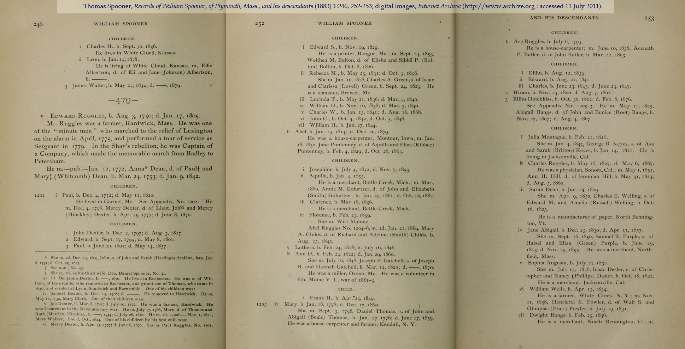
(c) Reference note (working file)
An actual working file citation would depend on the assertion from which the citation was referenced. The example below might be reference to a marriage tag:5. Thomas Spooner, Records of William Spooner, of Plymouth, Mass., and his descendants (1883) 1:246, 252-253; digital images, Internet Archive (http://www.archive.org : accessed 11 July 2011), entry for Asa Ruggles [Thomas], b. 6 July 1799; m. 10 June 1838 "Acenath P. Butler, d. of John Butler"; first child, Elihu R., b. 12 Aug 1841. Note: 1840 U.S. census has bride enumerated separately and as Asenath Preston.
For the birth of Asenath Butler, a working file reference note might read:
6. Thomas Spooner, Records of William Spooner, of Plymouth, Mass., and his descendants (1883) 1:246, 252-253; digital images, Internet Archive (http://www.archive.org : accessed 11 July 2011), entry for Asa Ruggles [Thomas], b. 6 July 1799. Reports "Acenath P. Butler, d. of John Butler, b. Mar 22, 1803."
Two generic reference note ports from Zotero are below. The first came from WorldCat; the second, Internet Archive, The images of the two Zotero info screens (reporting the capture) follow each entry.
From WorldCat. Pretty nice.
7. Thomas Spooner, Records of William Spooner, of Plymouth, Mass., and his descendants. (Cincinnati: [Press of F.W. Freeman], 1883).

From Internet Archive ... needs a little work.
8. Records of William Spooner, of Plymouth, Mass. : and his descendants, vol. I : Spooner, Thomas, b. 1817 : Free Download & Streaming : Internet Archive, n.d., http://www.archive.org/details/recordsofwilliam01spoo.
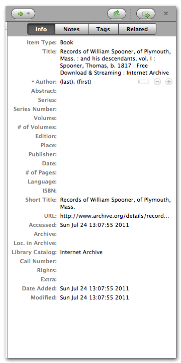
If I edit the Internet Archive information, I then can port as follows. I could edit the raw entry into a pretty nice starter citation.
9. Thomas Spooner, Records of William Spooner, of Plymouth, Mass. : and his descendants, 1883, http://www.archive.org.
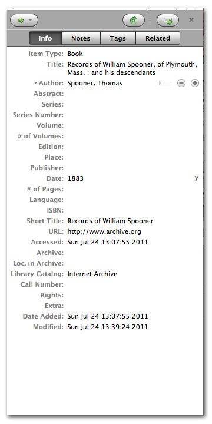
(d) Database design and BetterGEDCOM implications (working file)
105 Example-"1850 United States Federal Census" database
Principle references: EE, 2007, p. 254 [QuickCheck, database online], 275 [online databases], 277 [Ancestry census database].(a) Source list citations (working file)
"1850 United States Federal Census." Database. Ancestry.com. http://www.ancestry.com : 2011.(b) Source Label citation (working file)
“1850 United States Federal Census,” database (screenshot), Ancestry.com (http//www.ancestry.com : accessed 5 July 2011), entry for Asa Thomas (ae 51), Florence, Williams County, Ohio. |
| CG-105-1850_United_States_Federal_Census_database.png |
(c) Reference note (working file)
An actual working file citation would depend on the assertion from which the citation was referenced. The citation label contains enough information that it might be all that is used if this were reference from a residence tag for Asa Thomas. (Less the reference to the screenshot, thank you).10. “1850 United States Federal Census,” database, Ancestry.com (http//www.ancestry.com : accessed 5 July 2011), entry for Asa Thomas (ae 51), Florence, Williams County, Ohio.
(d) Database design and BetterGEDCOM implications (working file)
106 Example-1850 U.S. census (digital images)
Principle references: EE, 2007,p. 240 [QuickCheck, digital images ...], 259 [about enumeration year vs visitation date, and other citation element explanations], 275-277 [1850 U.S. census].(a) Source list citations (working file)
Ohio. Williams County. 1850 U.S. census. Digital image(s). Ancestry.com. http://www.ancestry.com : 2006.U.S. Ohio. Williams County. 1850 census. Digital image(s). Ancestry.com. http://www.ancestry.com : 2006.
Census. 1850. U.S. Ohio. Williams County. Digital image(s). Ancestry.com. http://www.ancestry.com : 2006.
(b) Source Label citation (working file)
1850 U.S. census, Williams County, Ohio, population schedule, Florence, p. 59 (stamped); digital image(s), Ancestry.com (http: www.ancestry.com : accessed 26 December 2006), citing National Archives microfilm publication M432, roll 74.
(c) Reference note (working file)
An actual working file citation would depend on the assertion from which the citation was referenced. For the residence of Asa Thomas at 1850, it might read:11. 1850 U.S. census, Williams County, Ohio, population schedule, Florence, p. 59 (stamped), dwelling 808, family 810, Asa Thomas household; digital image(s), Ancestry.com (http: www.ancestry.com : accessed 26 December 2006), citing National Archives microfilm publication M432, roll 74. One door down from John VanWormer.
I like to see relative census data, particularly for household members. I usually create one "master source" for census and include note details at the master level. (I don't repeat those note details in the subsequent reference notes.) My working file citations usually include the census visitation date (date of enumeration), too, though I see Mills considers this extraneous [EE, 2007, 259].
12. 1850 U.S. census, Williams County, Ohio, population schedule, Florence, p. 59 (stamped), dwelling 808, family 810, Asa Thomas household, 27 September 1850; digital image(s), Ancestry.com (http: www.ancestry.com : accessed 26 December 2006), citing National Archives microfilm publication M432, roll 74. Asa is ae 51, b. Maine, a carpenter; apparent wife, Aseneth Thomas, ae 47, b. Mich (doesn't read/write); apparent children b. Ohio and attend. school, Elihu Thomas, ae 11; Edward Thomas, ae 9. One door down from John VanWormer.
(d) Database design and BetterGEDCOM implications (working file)
107 Example-1850 U.S. census (digital image/household focus)
I included 107 to show how a source label might appear if the census source was focused at the household level (which is a common focus of a U.S. census full reference note). This focus is a rather rather simple application of the broader concept of "higher" or "lower" sources. Understanding higher or lower sources is especially useful when the source is a document within a folder, which is part of a collection, etc. in an archive. See also GENTECH Data Model (http://www.ngsgenealogy.org/cs/GenTech_Projects ) and Robert Raymond, "Interoperable Citation Exchange 2009-03-11.pdf," p. 22.(a) Source list citations (working file)
See "106 Example-1850 U.S. census (digital image)."(b) Source Label citation (working file)
1850 U.S. census, Williams County, Ohio, population schedule, Florence, page 59 (stamped), dwelling 808, family 810, Asa Thomas household; digital image(s), Ancestry.com (http: www.ancestry.com : accessed 26 December 2006), citing National Archives microfilm publication M432, roll 74.
(c) Reference note (working file)
See "106 Example-1850 U.S. census (digital image)"(d) Database design and BetterGEDCOM implications (working file)
108 Example-"Iowa State Census Collection ..." database.
I included 108 to show (or reinforce) that the "person of interest" element for a database source label or reference note citation is reporting about the level of focus--it actually identifies the source record. Without that element, the citation would just refer to the entire database. (There might be many entries for the name Asa Thomas in some databases.) It's likely many users reserve the more general (higher level) focus for their source list citations.Principle references: EE, 2007, p. 296-297.
(a) Source list citations (working file)
"Iowa State Census Collection, 1836-1925." Database. Ancestry.com. http://www.ancestry.com : 2011.(b) Source Label citation (working file)
“Iowa State Census Collection, 1836-1925,” database (screenshot), Ancestry.com (http://www.ancestry.com : accessed 5 July 2011), entry for Asa R. Thomas, 1856 (Jones County).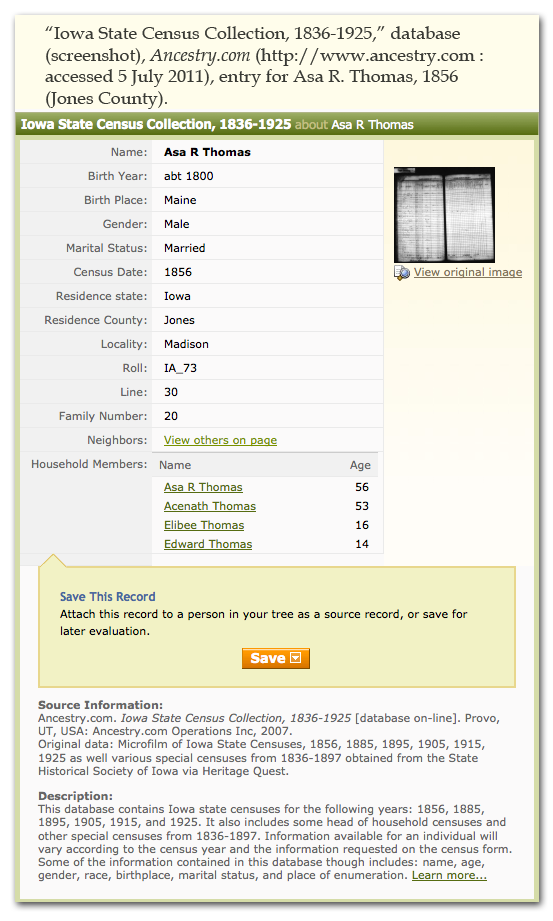
(c) Reference note (working file)
An actual working file citation would depend on the assertion from which the citation was referenced. For a residence tag, the citation might read as below. (See 109 Example for a more meaningful citation).13. “Iowa State Census Collection, 1836-1925,” database, Ancestry.com (http://www.ancestry.com : accessed 5 July 2011), entry for Asa R. Thomas, 1856 (Jones County);
(d) Database design and BetterGEDCOM implications (working file)
109 Example-1856 Iowa state census (digital images)
I included 109 as an example of what one user called "hybrids"--sources about which Evidence Explained principles apply, but there is no specific example in the work, much less a QuickCheck model. See Mills 2007 listserve exchange with Cheri (link in Principle references).Principle References. Mills to Cheri, APG-L, 18 Mar 2007 ; EE, 2007, p. 296-297.
See also, Ancestry.com.
(a) Source list citations (working file)
See also 101 Example-1840 U.S. censusIowa. Jones County. 1856 state census, population schedule. Iowa Historical Society. Consulted as “Iowa State Census Collection, 1836-1925.” Digital image(s). Ancestry.com. http://www.ancestry.com : 2007.
(b) Source Label citation (working file)
1856 Iowa state census, Jones County, population schedule, Madison township, page 316-317 (stamped); “Iowa State Census Collection, 1836-1925,” digital image(s), Ancestry.com (http://www.ancestry.com : accessed 22 September 2007), citing “Microfilm of Iowa State Censuses, 1856, 1885, 1895, 1905, 1915, 1925 as well various special censuses from 1836-1897 obtained from the State Historical Society of Iowa via Heritage Quest.”
(c) Reference note (working file)
An actual working file citation would depend on the assertion from which the citation was referenced. For a residence/migration tag, the citation might read as below:14. 1856 Iowa state census, Jones County, population schedule, Madison township, page 316-317 (stamped), dwelling 18, family 20, Asa R.Thomas household; “Iowa State Census Collection, 1836-1925,” digital image(s), Ancestry.com (http://www.ancestry.com : accessed 22 September 2007), citing “Microfilm of Iowa State Censuses, 1856, 1885, 1895, 1905, 1915, 1925 as well various special censuses from 1836-1897 obtained from the State Historical Society of Iowa via Heritage Quest”; apparent microfilming note stamped "tight binding"; reports all household members have resided Iowa one year (indirectly, migrated 1855). None of Asenath's Preston children were identified Jones County entries about the 1856 Iowa state census.
(d) Database design and BetterGEDCOM implications (working file)
110 Example-1860 U.S. census (digital images)
Principle references: EE, 2007, p. 248 [QuickCheck model for 1850-1870], 277-278 [1860 U.S. census].(a) Source list citations (working file)
Iowa. Jones County. 1860 U.S. census, population schedule. Digital image(s). Ancestry.com. http://www.ancestry.com : 2006.U.S. Iowa. Jones County. 1860 U.S. census, population schedule. Digital image(s). Ancestry.com.http://www.ancestry.com : 2006.
Census. 1860. U.S. Iowa. Jones County. Digital image(s). Ancestry.com. http://www.ancestry.com : 2006.
(b) Source Label citation (working file)
1860 U.S. census, Jones County, Iowa, population schedule, Madison, p. 71 (as page; upper left); digital image(s), Ancestry.com (http: www.ancestry.com : accessed 27 December 2006), citing National Archives microfilm publication M653, roll 328.
(c) Reference note (working file)
An actual working file citation would depend on the assertion from which the citation was referenced. For a relationship tag, the citation might read as below:15. 1860 U.S. census, Jones County, Iowa, population schedule, Madison, p. 71 (as page; upper left), dwelling 517, family 512, Asa R. Thomas household; digital image(s), Ancestry.com (http: www.ancestry.com : accessed 27 December 2006), citing National Archives microfilm publication M653, roll 328; also residing in the home is Geo W. Preston, ae 28, b. Ohio, a "Farm Laborer w. for mother."
(d) Database design and BetterGEDCOM implications (working file)
111 Example-1870 U.S. census (digital images)
Principle references: EE, 2007, p. 248 [QuickCheck model for 1850-1870], 278-279 [1870 U.S. census].(a) Source list citations (working file)
Iowa. Jones County. 1870 U.S. census, population schedule. Digital image(s). Ancestry.com. http://www.ancestry.com : 2006.U.S. Iowa. Jones County. 1870 U.S. census, population schedule. Digital image(s). Ancestry.com.http://www.ancestry.com : 2006.
Census. 1870. U.S. Iowa. Jones County. Digital image(s). Ancestry.com. http://www.ancestry.com : 2006.
(b) Source Label citation (working file)
1870 U.S. census, Jones County, Iowa, population schedule, Madison, p. 124 (stamped), sheet 23 (penned as page); digital image(s), Ancestry.com (http: www.ancestry.com : accessed 27 December 2006), citing National Archives microfilm publication M593, roll 401.
(c) Reference note (working file)
An actual working file citation would depend on the assertion from which the citation was referenced. For a relationship tag, the citation might read as below:16. 1870 U.S. census, Jones County, Iowa, population schedule, Madison, p. 124 (stamped), sheet 23 (penned as page), dwelling 163, family 167, A. R. Thomas household; digital image(s), Ancestry.com(http: www.ancestry.com : accessed 27 December 2006), citing National Archives microfilm publication M593, roll 401. Two doors down from H. C. Preston (separately, Aseanth's son) and family; one door from George Preston (separately, Aseanth's son) and family; one door up from Lucius VanWormer and apparent wife, Alice (separately, Aseanth's dau.), and their family.
(d) Database design and BetterGEDCOM implications (working file)
112 Example-1880 U.S. census (digital images)
In brief: The U.S. census examples posted as Citation Graphics are population schedules (family historians also work with there are other U.S. census schedules. See the blog posting here for an example of other census schedule work). Almost every U.S. census (1790-1930 are accessible) is unique in content. In terms of general presentation and organization (influences citation details), U.S. census fall into three categories: (a) early census (1790-1840) that report head of household and provide general ages of household residents ; (b) 1850-1870, where the names and ages of residents are given, but relationships are not reported; (c) post 1880, which include enumeration districts and report relationships between household members.Principal references: EE, 2007, p. 240 [QuickCheck, Online commercial site], 250 [QuickCheck, 1880-1930, NARA films], 279-282 [1880, 1890, 1900 and 1910-1930 U.S. census].
See also, Ancestry.com
(a) Source list citations (working file)
Iowa. Jones County. 1880 U.S. census, population schedule. Digital image(s). Ancestry.com. http://www.ancestry.com : 2006.U.S. Iowa. Jones County. 1880 U.S. census, population schedule. Digital image(s). Ancestry.com.http://www.ancestry.com : 2006.
Census. 1880. U.S. Iowa. Jones County. Digital image(s). Ancestry.com. http://www.ancestry.com : 2006.
If the census was access via microfilm, as with the NARA film cited below, the source list citation would include the film details (the source label citation and reference note would likewise report about the film):
Iowa. Jones County. 1880 U.S. census, population schedule. NARA microfilm publication T9, roll 348. Washington, D.C. National Archives and Records Administration.
(b) Source Label citation (working file)
1880 U.S. census, Jones County, Iowa, population schedule, Madison Township, p. 410A (stamped), enumeration district (ED) 334, sheet 13 (penned as page); digital image(s), Ancestry.com (http: www.ancestry.com : accessed 27 December 2006), citing National Archives microfilm publication T9, roll 348.
(c) Reference note (working file)
An actual working fie citation would depend on the assertion from which the citation was referenced ....17. 1880 U.S. census, Jones County, Iowa, population schedule, Madison Township, p. 410A (stamped), enumeration district (ED) 334, sheet 13 (penned as page), dwelling 121, family 121, Asa Thomas household; digital image(s), Ancestry.com (http: www.ancestry.com : accessed 27 December 2006), citing National Archives microfilm publication T9, roll 348. One door up from household of George W. Preston [separately, Asenath's son]; one door down from William Stingley and wife Estelle and family [Estelle is separately the dau. of Henry C. Preston, Asenath's son]; at dwelling 128 is Mark L. VanWormer household [Mark is separately son of Alice (Preston) VanWormer, Asenath's daughter].
(d) Database design and BetterGEDCOM implications (working file)
113 Example-"Madison Village [Cemetery]"
Note: This example is related to others that follow numbered 114-119.Principle references: References: EE, 2007, p. 495.
See also, //Jones County Iowa GenWeb// > Cemeteries > Madison Village
(a) Source list citations (working file)
Christianson, Jim and Joanne Wilken, compilers. “Madison Village [Cemetery].” Abstracts. Jones County Iowa GenWeb. http://www.rootsweb.com/~iajones/cemetery/MadisonVillage.htm : 2006.(b) Source Label citation (working file)
Jim Christianson and Joanne Wilken, compilers, “Madison Village [Cemetery],” database (screenshot), Jones County Iowa GenWeb (http://www.rootsweb.com/~iajones/cemetery/MadisonVillage.htm : accessed 26 Dec 2006); in relevant part, cites reading by Jones County Genealogical Society, n.d. Reports cemetery located Madison township, section 20 (42°04'10"N,091°06'10"W), also known as “Union Cemetery.”
(c) Reference note (working file)
An actual working fie citation would depend on the assertion from which the citation was referenced. A citation here for notice of Asa's burial and tombstone reading.18. Jim Christianson and Joanne Wilken, compilers, “Madison Village [Cemetery],” database (screenshot), Jones County Iowa GenWeb(http://www.rootsweb.com/~iajones/cemetery/MadisonVillage.htm : accessed 26 Dec 2006); entry for row 4, lot 6, "Acy r. Thomas," died "9-12-1880" [based on review of other entries, 12 Sept 1880], age "82y 2m 6d"; cites reading by Jones County Genealogical Society, n.d. Database reports cemetery located Madison township, section 20 (42°04'10"N,091°06'10"W), also known as “Union Cemetery.”
(d) Database design and BetterGEDCOM implications (working file)
114 Example-TMG Date Calculator (cemetery)
Note: This example is related to others. See those numbered 113, 115-119.(a) Source list citations (working file)
The Master Genealogist, v7. Date Calculator.(b) Source Label citation (working file)
The Master Genealogist v7, date calculator, estimating date of birth from age at death about “Acy R. Thomas” from “Madison Village [Cemetery],” abstracts, Jones County Iowa GenWeb (http://rootsweb.com/~iajones/cemetery/MadisonVillage.htm).
(c) Reference note (working file)
An actual working fie citation would depend on the assertion from which the citation was referenced. In my working file, the citation for this source would be merged with the citation, above, to report as follows, including reference to the indirect information about Asa's birth based on information about his age at death:19. Jim Christianson and Joanne Wilken, compilers, “Madison Village [Cemetery],” database (screenshot), Jones County Iowa GenWeb(http://www.rootsweb.com/~iajones/cemetery/MadisonVillage.htm : accessed 26 Dec 2006), entry for row 4, lot 6, "Acy r. Thomas," died "9-12-1880" [based on review of other entries, 12 Sept 1880], age "82y 2m 6d,"
cites reading by Jones County Genealogical Society, n.d. Indirectly, reports Asa b. 6 July 1798 [The Master Genealogist v7, date calculator]). Records of William Spooner... (1883) has Asa's birth as 06 July 1799. Database reports cemetery located Madison township, section 20 (42°04'10"N,091°06'10"W), also known as “Union Cemetery,”
(d) Database design and BetterGEDCOM implications (working file)
115 Example-"Hwy 64 and 120th Street Cemetery"
Note: This example is related to others. See those numbered 113-114, 116-119.Principle references:
See also, //The Wayback Machine//
(a) Source list citations (working file)
Sampica, Marsha and Jones County Genealogical Society. “Hwy 64 and 120th Street Cemetery.” Mapped cemetery reading. The Iowa Tombstone Transcription Project. http://rootsweb.com/~cemetery/iowa/cemeteries/joneshwy64120streetcemetery.htm : 2006.(b) Source Label citation (working file)
Marsha Sampica and Jones County Genealogical Society (JCGS), "Hwy 64 and 120th Street Cemetery," mapped cemetery reading (spreadsheet styled), The (Iowa) Tombstone Transcription Project (http://www.rootsweb.com/~cemetery/iowa/cemeteries/joneshwy64120streetcemetery.htm : accessed 25 December 2006). As of July, 2011, the URL returns a broken link; page image can be accessed via The Wayback Machine (http://bit.ly/pWNtjh).
(c) Reference note (working file)
An actual working fie citation would depend on the assertion from which the citation was referenced. As with the prior citation example (114), this source would be merged with a date calculator record, somewhat as below:20. Marsha Sampica and Jones County Genealogical Society (JCGS), "Hwy 64 and 120th Street Cemetery," mapped cemetery reading (spreadsheet styled), The (Iowa) Tombstone Transcription Project(http://www.rootsweb.com/~cemetery/iowa/cemeteries/joneshwy64120streetcemetery.htm : accessed 25 December 2006), entry for "Ase R. Thomas," row 7, headsone 4, d. Sept 12, 1880, aged 82 yrs 2 ms 6 ds," (indirectly, born 6 July 1798 [The Master Genealogist v7, date calculator]). As of July, 2011, the URL returns a broken link for Sampica's reading; page image can be accessed via The Wayback Machine (http://bit.ly/pWNtjh.
(d) Database design and BetterGEDCOM implications (working file)
116 Example-Jones County Death Register
Note: This example is related to others. See those numbered 113-115, 117-119.Principle references:
See also, //Jones County Iowa GenWeb// > Deaths
(a) Source list citations (working file)
Kuhfittig, Mary Kay, compiler. Jones County Death Register 1 (1 Sep 1880-11 Nov 1897). Abstracts. Jones County Iowa GenWeb. http://www.rootsweb.com/~iajones/cemetery/MadisonVillage.htm : 2006.(b) Source Label citation (working file)
Mary Kay Kuhfittig, compiler, Jones County Death Register 1 (1 Sep 1880 - 11 Nov 1897), abstracts, Jones County Iowa GenWeb (http://www.rootsweb.com/~iajones/deaths/deaths.htm : accessed 8 June 2006), entries below for Thomas surname, cites FHL film 1255499.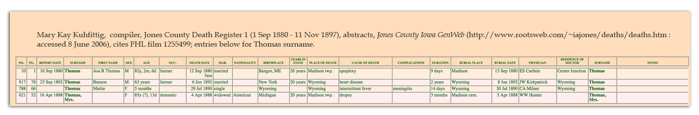
(c) Reference note (working file)
An actual working fie citation would depend on the assertion from which the citation was referenced. Every field in this abstract provides meaningful information, so a researcher would probably compare and contrast the information learned from other sources (Asa's birth, marital status, when he migrated to the county, where he resided at the time of death, where he was buried ...). The citation for one noteworthy pfact follows.21. Mary Kay Kuhfittig, compiler, Jones County Death Register 1 (1 Sep 1880 - 11 Nov 1897), abstracts, Jones County Iowa GenWeb(http://www.rootsweb.com/~iajones/deaths/deaths.htm : accessed 8 June 2006), Asa R. Thomas, d. 12 Sept 1880, cites FHL film 1255499. Reports Asa age at death as 82y, 2m, 6d.
(d) Database design and BetterGEDCOM implications (working file)
118 Example-TMG Date Calculator (death register)
Note: This example is related to others. See those numbered 113-119.Principle references:
See also, //Jones County Iowa GenWeb// > Deaths
(a) Source list citations (working file)
The Master Genealogist, v7. Date Calculator.(b) Source Label citation (working file)
The Master Genealogist v7, date calculator, estimating date of birth from age at death about “Asa R. Thomas” based on details in Jones County Death Register 1, abstracts, Jones County GenWeb (http://www.rootsweb.com/~iajones/deaths/deaths.htm).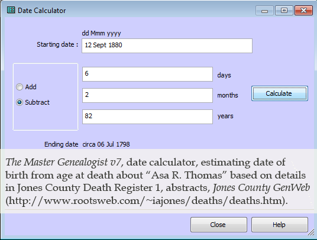
(c) Reference note (working file)
An actual working fie citation would depend on the assertion from which the citation was referenced ... this citation might be recorded separately,22. The Master Genealogist v7, date calculator, estimating date of birth as ca 06 July 1798 from age at death about “Asa R. Thomas” based on details in Jones County Death Register 1, abstracts, Jones County GenWeb (http://www.rootsweb.com/~iajones/deaths/deaths.htm). Records of William Spooner... (1883) has Asa's birth as 06 July 1799.
... or merged with example 117.
23. Mary Kay Kuhfittig, compiler, Jones County Death Register 1 (1 Sep 1880 - 11 Nov 1897), abstracts, Jones County Iowa GenWeb(http://www.rootsweb.com/~iajones/deaths/deaths.htm : accessed 8 June 2006), cites FHL film 1255499, for Asa R. Thomas, d. 12 Sept 1880, cites FHL film 1255499. Reports Asa age at death as 82y, 2m, 6d (indirectly, b.
ca 06 July 1798 [The Master Genealogist v7, date calculator]). Records of William Spooner... (1883) has Asa's birth as 06 July 1799.
(d) Database design and BetterGEDCOM implications (working file)
119 Example-"Iowa Deaths and Burials ..."
Note: This example is related to others. See those numbered 113-117.Principle references:
See also, FamilySearch
(a) Source list citations (working file)
"Iowa Deaths and Burials." Database. FamilySearch http://www.familysearch.org : 2011.(b) Source Label citation (working file)
“Iowa Deaths and Burials,” database (screenshot), FamilySearch (http://www.familysearch.org : accessed 11 July 2011), entry for Asa R. Thomas, d. 12 Sep 1880, cites FHL film 1673845 [“Jones County (Iowa), Death Records, 1880-1933”].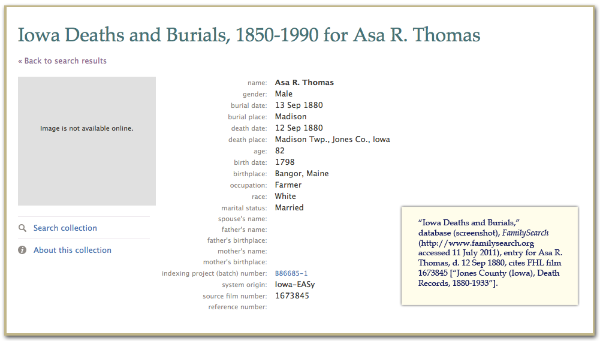
(c) Reference note (working file)
An actual working fie citation would depend on the assertion from which the citation was referenced.24. “Iowa Deaths and Burials,” database, FamilySearch (http://www.familysearch.org : accessed 11 July 2011), entry for Asa R. Thomas, d. 12 Sep 1880, cites FHL film 1673845 [“Jones County (Iowa), Death Records, 1880-1933”].
(d) Database design and BetterGEDCOM implications (working file)
120 Example-Vital Records of Hardwick (births)
Principle references: EE 470 [Town Registers: New England]See also, //InternetArchive// > //Vital Records of Hardwick ...//
(a) Source list citations (working file)
Baldwin, Thomas and Hardwick (Mass.). Vital records of Hardwick, Massachusetts, to the year 1850. 1883. Digital images. Internet Archive. http://www.archive.org : 2011.(b) Source Label citation (working file)
Thomas Baldwin and Hardwick (Mass.), Vital records of Hardwick, Massachusetts, to the year 1850 (1917), 110-111; digital images, Internet Archive (http://www.archive.org : accessed 11 July 2011).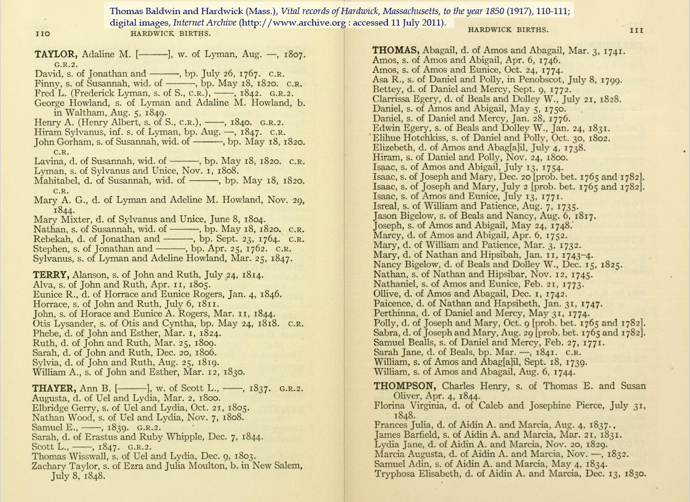
(c) Reference note (working file)
An actual working fie citation would depend on the assertion from which the citation was referenced.25. Thomas Baldwin and Hardwick (Mass.), Vital records of Hardwick, Massachusetts, to the year 1850 (1917), 111, for "Asa R. [Thomas], s. Daniel and Polly, [b.] in Penobscot, July 8, 1799"; digital images, Internet Archive (http://www.archive.org : accessed 11 July 2011).
(d) Database design and BetterGEDCOM implications (working file)
121 Example-Vital Records of Hardwick (marriages)
Principle references: EE 470 [Town Registers: New England]See also, //InternetArchive// > //Vital Records of Hardwick ...//
(a) Source list citations (working file)
Baldwin, Thomas and Hardwick (Mass.). Vital records of Hardwick, Massachusetts, to the year 1850. 1883. Digital images. Internet Archive. http://www.archive.org : 2011.(b) Source Label citation (working file)
Thomas Baldwin and Hardwick (Mass.), Vital records of Hardwick, Massachusetts, to the year 1850 (1917), 252; digital images, Internet Archive (http://www.archive.org : accessed 11 July 2011).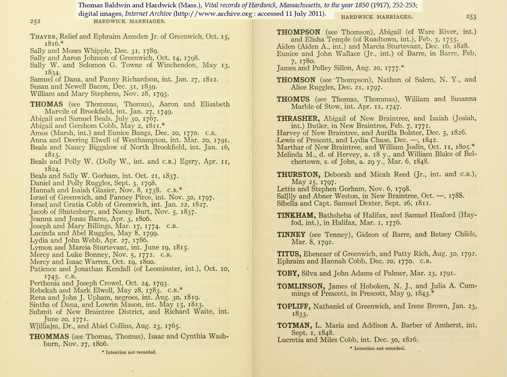
(c) Reference note (working file)
An actual working fie citation would depend on the assertion from which the citation was referenced.26. Thomas Baldwin and Hardwick (Mass.), Vital records of Hardwick, Massachusetts, to the year 1850 (1917), 252, for Daniel Thomas-Polly Ruggles, marriage, 3 Sept 1798; digital images, Internet Archive (http://www.archive.org : accessed 11 July 2011).
(d) Database design and BetterGEDCOM implications (working file)
122 Example-"Michigan Marriages ..." database
Principle references:See also, FamilySearch
(a) Source list citations (working file)
“Michigan Marriages, 1822-1995." Database. FamilySearch (http://www.familysearch.org : 2011.(b) Source Label citation (working file)
“Michigan Marriages, 1822-1995,” database (screenshot), FamilySearch (http://www.familysearch.org : accessed 11 July 2011), for Thomas-Preston marriage, 1841, cites FHL film 927427 [“Birth, marriage and death records of Hillsdale County (Michigan)”].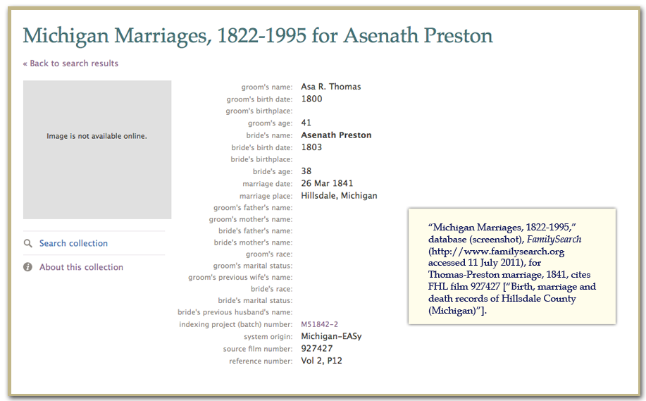
(c) Reference note (working file)
An actual working fie citation would depend on the assertion from which the citation was referenced.27. “Michigan Marriages, 1822-1995,” database, FamilySearch (http://www.familysearch.org : accessed 11 July 2011), for Asa R. Thomas-Asenath Preston marriage, 26 Mar 1841, cites FHL film 927427 [“Birth, marriage and death records of Hillsdale County (Michigan)”].
GeneJ:
Thank you for the examples. I like examples. They make everything less theoretical and more concrete.
I have stayed out of the discussion of citations, mostly because I don't believe they should be in GEDCOM or BetterGEDCOM. If GEDCOM or BG contains all the information needed for software to produce the citation (either as a Source List, Source Label, or Reference Note), then it has what it needs. To me it is up to the software to decide how to produce the citations from this information. And it can decide whether to implement EE, Lackey, or anyone else.
I really don't think it is BetterGEDCOM's job to define how to do it, but just to make it doable. Citation methodologies will change, so BG must simply be flexible enough to hold what's needed for any methodology.
In your example, you have the source and repository information which is your (a) example. This is contained in the SOUR record in GEDCOM, which has subtags for Author, Title, Abbreviation, Publication, Text, Repository, Reference Number, Record ID, Data on the various events in the document, Notes, Multimedia links (i.e. for the image) and Change date. Note that the access date should not be with the Source since a source can be accessed many times for many different records. It should be with the full reference note.
Here's how I would implement your (a) Source list example in GEDCOM:
0 @S123@ SOUR
1 TITL Census, U.S., 1840, Ohio, Williams County
1 REPO @R5@
2 CALN http://www.ancestry.com
3 MEDI Digital images(s)
2 NOTE Citing National Archives microfilm publication M704, roll 433.
You can order the title any number of ways, but if you want your genealogy program to sort it properly, order it from largest grouping to smaller grouping as I've done above, with commas between to separate the groups. Sort of just like Places except they're done smallest to largest.
A full reference note basically adds the "Where Within Source" information to the Source. In GEDCOM, this is somewhat misnamed, but is the SOURCE_CITATION. It includes the Where Within Source, Event type cited from and Role in the Event, Recording Dae, Text from the Source, Multimedia links, Notes, and the QUAY (certainty assessment). As far as I can tell, it contains basically all that is needed. I'm not sure what everyone thinks is missing.
Here's how I would implement your (c) Reference Note example in GEDCOM:
2 SOUR @S123@
3 PAGE St. Joseph Township, p. 219 (stamped on right page), line 7, Asa Thomas household
3 NOTE Asa's son, Elihu R. (separately, b. 1839) was not included in the household tally
3 NOTE See the entry at line 10 for Asenath Preston, Elihu's mother.
3 DATA
4 DATE 3 AUG 2005
Seriously, you and everyone else here at BG should take a good close look at GEDCOM. It has a lot more in it than most people realize. If developers would implement GEDCOM correctly and their programs input and output it as it was defined, we'd have a lot fewer problems transferring data.
That said, there are some deficiencies in GEDCOM. One that I see as important is that the (c) example has to be repeated for every assertion that uses that particular piece of evidence. So I would sooner see:
0 @E45@ EVID
1 SOUR @S123@
2 PAGE St. Joseph Township, p. 219 (stamped on right page), line 7, Asa Thomas household
2 NOTE Asa's son, Elihu R. (separately, b. 1839) was not included in the household tally
2 NOTE See the entry at line 10 for Asenath Preston, Elihu's mother.
2 DATA
3 DATE 3 AUG 2005
And then where the assertions are made for Asa Thomas, Elihu R., and Asenath Preston, they can then refer to the one Evidence record using:
2 EVID @E45@
Louis
I am troubled by this statement, because to _me_ it is mixing up two distinct concepts. Now, you can refer to anything by any name you want but if I call it one thing and you call it another, sooner or later, we get stuck when trying to talk to one another.
Your sample reads:
4. Gene Preston, Michigan, to GeneJ, "Wm. Preston’ #7’s Estate," E-mail dated 11 Sept 2008; E-mail archive, privately held by GeneJ, Arizona. Asa and Asenath presumably married before 18 June 1845; deed then dated gives her surname as Thomas
(sample ends)
The note about the date of the marriage presumably explains why you say that the citation depends on the assertion. My problem with this wording is that I personally see two distinct items in your footnote. One is the citation itself:
"Gene Preston, Michigan, to GeneJ, "Wm. Preston’ #7’s Estate," E-mail dated 11 Sept 2008; E-mail archive, privately held by GeneJ, Arizona."
The other is an assertion-specific note:
"Asa and Asenath presumably married before 18 June 1845; deed then dated gives her surname as Thomas."
Together those make up the footnote you show. Printed footnote = Citation + Assertion-specific-data
Why is this difference in terminology important? Well, apart from the need to communicate clearly, what happens is that a number of software designers will split those 2 concepts apart and store them differently and if we can't discuss those concepts, we'll both be convinced that the solution won't work.
Re splitting it: In a GEDCOM file what I call the citation itself ("Gene Preston, Michigan, to GeneJ, "Wm. Preston’ #7’s Estate," E-mail dated 11 Sept 2008; E-mail archive, privately held by GeneJ, Arizona.") will PROBABLY all get held on the SOURCE_RECORD since it's common to the full printed footnote for every assertion justified by that source.
What I call the assertion specific note ("Asa and Asenath presumably married before 18 June 1845; deed then dated gives her surname as Thomas.") pretty much has to be held as part of the relevant SOURCE_CITATION that is held against the specific assertion. (Obviously there can be several SOURCE_CITATIONs per assertion. If so, you take a judgement on which one to hold it against - or duplicate it against several)
So - I'm perfectly happy with the view that the full text of the footnote will not be the same for every footnote referring to that source. But you need to understand that us analytical types will want to split that text up into chunks. Now - I think that at least some of your software does do that splitting, so we probably don't actually have much of a problem. In fact the problem might actually be the opposite....
At the moment my textual algebra says:
Printed footnote = Citation + Assertion-specific-data
What if what you need is not that at all but:
Printed footnote = Assertion-specific-leading-data + Citation + Assertion-specific-trailing-data ????? Because GEDCOM doesn't support that.
And what if you also wanted some general note that never gets printed? E.g. personal thoughts that are not intended for output??
So - what do _you_ actually need in your full footnotes, whatever we call them?
I imagine this is why you include what I've referred to as 'Assertion-specific-data' as part of what you call the citation. In other words, ESM would tell me I'm wrong and the citation is indeed the full footnote.
Well, there are issues with this for me with my analyst's hat on.
'record details that affect the use or evaluation of that data' is a blank cheque in terms of how big those details are, and any software designer hates blank cheques in terms of length, format etc. If she'd said 'summarises details that affect...' it would have been better, because that sets expectations.
As it is, someone could write an essay at this point - worse, they might even include (head in hands) citations within those details!
This, incidentally, is another time when I feel that ESM is clearly writing for someone who is manually writing a report and not for a software designer - people are reasonable and intelligent - computers are neither - so that's why people like myself want things tied down much more than ESM writes.
(1) I might say a reference note citation is driven by an assertion but developed ("proven") from a source or sources.
In the 103 example, the line, "Asa and Asenath presumably married before 18 June 1845; deed then dated gives her surname as Thomas." I was actually trying to recognize indirect evidence (=the underlying record doesn't "say" they married before the date of the deed). It might have been better developed as:
4[b]. Asa and Asenath presumably married before 18 June 1845 as deed then dated gives her surname as Thomas; Gene Preston, Michigan, to GeneJ, “Wm. Preston’ #7’s Estate,” E-mail dated 11 Sept 2008; E-mail archive, privately held by GeneJ, Arizona.
4[c]. Gene Preston, Michigan, to GeneJ, “Wm. Preston’ #7’s Estate,” E-mail dated 11 Sept 2008; E-mail archive, privately held by GeneJ, Arizona, for "[deed] dated June 18, 1845 shows "'Thomas, Asa R. & Asenath' to Seamans, Wm...'" (indirectly, Asenath and Asa probably married before the date of that deed).
(2) "Assertion-specific."
How about "citation specific detail" and "citation specific text [or memo]."
Maybe helpful to look at these terms as focus or levels of detail or "one (master source reference note) to many (citation entries)."
The bibliographic entry (citation) is created at a higher level (less detailed). Reference notes are created at a lower level (more identifying detail, more descriptive detail and more evaluative detail).
In genealogy software, we also have the design concept of a "master source" (if you will, a series of elements) and then a lower or later staged group of "assertion-level" or "citation specific" elements.
Robert Raymond, and possibly Mills, suggest the bibliography should define the reference note in the master source (which by definition would exclude from the a host of identifying, descriptive and evaluative details at the master level--all of which would need to be added at the lower level.
If I have my genealogy software user lingo lingo correct, the Raymond/Mills approach would be called a "lumper"--someone who defines the reference note in the master source at a high level, then adds a host of details at the "assertion level"/in "citation specific" elements.
The reverse approach is described as a splitters--the reference note in the master source is designed so that very little detail, if any, is added at the "assertion level" (or in "citation specific" elements).
Although the formats are a little outdated, here is a 2005 TMG discussion about lumpers vs splitters.
http://news.rootsweb.com/th/read/TMG/2005-01/1104898958
Here's a recent blog by a Legacy user, self described lumper.
http://jmtomko.wordpress.com/2011/07/02/my-struggle-with-legacy-family-tree-sourcing-part-2/
And a short thread on RM list about a lumper
http://archiver.rootsweb.ancestry.com/th/read/ROOTSMAGIC-USERS/2010-09/1284344613
More about this separately, but I usually split but sometimes lump, and the decision doesn't have anything to do with how I design my source list entry. (It has more to do with my desire to manage my database source structure at the master level--I'd rather chase 6,000 master sources than 40,000 "assertion level" or "citation specific" entries.)
(3) '[R]ecord details that affect the use or evaluation of that data' is a blank cheque in terms of how big those details are.
You are likely already doing this, but just don't look at it the same way.
Including the descriptor "database" is another way of "recording details that affect..."--the source was a finding aid and not the original. If you include whether something is a digital image, transcription or abstract, you are "recording details ..."
Other descriptors are just as logical, but might be "source (or focus) specific." When you reference a record date distant from the event date, you are "recording details" about the timeliness of the record. Adding the informant's name to a citation referencing someone's death certificate, is "recording details that ..." Tombstone inscription hard to read? Subject of a photograph identified by XXX. If someone's unsourced GEDCOM entry is your source for a birth pfact, and you note the record was unsourced, you are "recording details ..."
All these descriptors details about the source used to weigh the evidence/resolve conflicts in order to reach a conclusion. In EE, Mills discusses different source types set out examples, separate from QuickCheck. (She comments about the "details to record" that are common to specific source types.) Taken as a whole, _Evidence Explained_ is pretty comprehensive to this point.
(4) "Printed footnote = Assertion-specific-leading-data + Citation + Assertion-specific-trailing-data ????? Because GEDCOM doesn't support that."
Maybe my memory has faded, but does GEDCOM set out any arrangement? It looked to me like it was just passing elements in one of a few packets. One of those packets happens to be "Source_Citation."
(5) You wrote, "'record details' ... I imagine this is why you include what I've referred to as 'Assertion-specific-data' as part of what you call the citation."
As above, to me these are mechanics, and users will select an approach that works best for them.
I've actually not found element terms like "Citation Details" and "Citation Text" (or "Citation Memo") to be confusing, they are just "element names" and happen to be particular options at the citation level. On the other hand, I do think we can come up with terms that are far better than GEDCOM's PAGE (WHERE_IN_SOURCE) or TEXT (TEXT_FROM_SOURCE).
Might terms like "citation specific detail" or "citation specific text [or memo] be more amenable? (With the word "specific" or leading abbr "CS" distinguishing these elements from the elements in the reference note at the master source level?
P.S. As above, I think Raymond (and it seems Mills) erred by trying to define the master source reference note at the bibliographic level .... which is why I think they also don't like the terms like "citation details." (Because they would see a whole host of elements then being defined as just "details.")
P.S. Raymond's presentation presentation about the fields in TMGv7 and FTM 2011 wasn't quite right, btw.
TMG has three "citation specific" fields (elements)-Citation Detail, Citation Memo and Citation Reference.
FTM 2011 has "Citation Detail" and "Citation Text"
We need the Reunion fields for this, also. I took a peek, looks as though they have a citation specific field called "Detail." Maybe Kiwi will see this note and comment.
More in a bit ...
(1) Re "I was actually trying to recognize indirect evidence". I don't have any problem with what you wrote in the first place. Don't make too much of a meal of the difference between direct and indirect evidence for me, if the logic is obvious, as it is here.
(2) Re "Assertion-specific." How about "citation specific detail" and "citation specific text [or memo]."
Again, the terms themselves are not an issue for me. I just want to convey that these 2 things are, to me, different. Whatever they're called.
(2.1) "In genealogy software, we also have the design concept of a "master source""
I'm losing this again - someone help us please!!
- what's the difference between a source and a master source??? Is there any? Is a master-source what we see printed for a source-record?
(2.2) "the Raymond/Mills approach would be called a "lumper"--someone who defines the reference note in the master source at a high level, then adds a host of details at the "assertion level"/in "citation specific" elements."
I'm not wholly sure this is quite what's going on. It MIGHT be but let me just put up an alternative explanation that might explain stuff... Like you, I usually split my source records. So if I have 6 households in Dundee in the 1851 census, I have 6 sources (i.e. 6 source records). HOWEVER - if I had a bibliography, I really can't see the point in having 6 entries in the bibliography for these households. I'd be very tempted to just have one bibliography entry for the complete 1851 Census from ScotlandsPeople. In my case I'd have to do a manual edit to get to that stage.
You say that "Robert Raymond ... suggests the bibliography should define the reference note in the master source". I am assuming this means the bibliography should define the contents of various items in the source record. In general, this is WRONG. The consequence is, as you say, "a host of ... details ... need to be added at the lower level". That means (unless I'm misunderstanding) these details are multiplied, not written just once. BAD! Especially when you have to amend some of that text. Now, I recognise that we have to live with the software we've got but in general I'd rather have repetitious bibliography entries (e.g. 6 bibliography entries) rather than repeat my data.
Is this what's going on - that a sensible bibliography entry is actually dictating the content of the source records and moving stuff out to the citation specifics? (Cart before horse, I'd call it)
(3) " '[R]ecord details that affect the use or evaluation of that data' is a blank cheque in terms of how big those details are. You are likely already doing this, but just don't look at it the same way"
Absolutely I am recording details that affect the use or evaluation of that data, and I do look at it in exactly the same way. My issue is not that I think the recording is unnecessary but that there is no guidance from ESM for software designers on how much text and of what type, to expect at this point. In the worst case someone might write a whole essay at this point on (say) the possible bias of William Shakespeare because of the nature of the Tudor establishment commissioning his plays and their ancestry in the Wars of the Roses. Now, of course, anyone with sense would have pushed such an essay out as a shared note at least and cross-referred, or even published it elsewhere and cited it separately. If that is to be the case, then we need to set the expectation for the software guys that this is what will be done so they only need expect 2 or 3 sentences - which they'll multiply by a factor anyway.
The issue is not that it's there - the issue is that there's no guidance on how much to expect there.
(4) "does GEDCOM set out any arrangement?" No, but if you only have one set of Assertion-specific-data, you certainly couldn't split it so some went at the front and some at the back. So if you want to have GenBox's LeadText and Annotation passed to another GenBox user via BG, you need 2 items and an indication which is which.
(5) "I do think we can come up with terms that are far better than GEDCOM's PAGE (WHERE_IN_SOURCE) or TEXT (TEXT_FROM_SOURCE)."
Now we need to agree to disagree here. I really don't see how the simple concept of specifying what page (or reel, or....) the stuff is on needs improving. And Text-from-source seems pretty clear to me. I might not use it much, but it's clear. For me, GenBox's LeadText is reasonable as a name because it does convey something about where the text appears. Annotation is, by comparison, meaningless as a name - why not TrailingText? (Probably because Annotation came long, long before LeadText???)
Adrian
[1] your (2.1) "In genealogy software, we also have the design concept of a "master source"" I'm losing this again - someone help us please!!
I'll try to convey the master source in a screen shot or two on the mechanics page. In the mean time, Raymond's "Interoperable Citation Exchange..." includes screenshots of the master source level definitions for RootsMagic 4 (beta), slide 44 of 83; Legacy at slide 42 of 83, TMG at 40 of 83, FTM 2009, 38 of 83; Ancestral Quest, 36 of 83; PAF, 34 of 83.
[2] your 2.2.
(a) You wrote, "So if I have 6 households in Dundee in the 1851 census, I have 6 sources (i.e. 6 source records). HOWEVER - if I had a bibliography, I really can't see the point in having 6 entries in the bibliography for these households."
Yup, yup.
(b) "I'd be very tempted to just have one bibliography entry for the complete 1851 Census from ScotlandsPeople. In my case I'd have to do a manual edit to get to that stage."
I don't know if we get you there in one module, but believe BetterGEDCOM will eventually get you there.
(c) "Robert Raymond ... suggests the bibliography should define the reference note in the master source". I am assuming this means the bibliography should define the contents of various items in the source record. In general, this is WRONG. The consequence is, as you say, "a host of ... details ... need to be added at the lower level". That means (unless I'm misunderstanding) these details are multiplied, not written just once. BAD! Especially when you have to amend some of that text."
Bad .... yes.
(d) "Is this what's going on - that a sensible bibliography entry is actually dictating the content of the source records and moving stuff out to the citation specifics? (Cart before horse, I'd call it)"
It was a standardization point Robert Raymond made in his ICE slide presentation.
[3] '[R]ecord details that affect the use or evaluation of that data' is a blank cheque in terms of how big those details are. You are likely already doing this, but just don't look at it the same way" ... Absolutely I am recording details that affect the use or evaluation of that data, and I do look at it in exactly the same way. My issue is not that I think the recording is unnecessary but that there is no guidance from ESM for software designers on how much text and of what type, to expect at this point.
I understand what you are saying. Mills covers the principes, but she scatters many through the text and then selectively shows examples. On the other hand, in _only_ 900 pages, there are only so many combinations and permutations you can offer.
[4] ""I do think we can come up with terms that are far better than GEDCOM's PAGE (WHERE_IN_SOURCE) or TEXT (TEXT_FROM_SOURCE)."
Now we need to agree to disagree here. I really don't see how the simple concept of specifying what page (or reel, or....) the stuff is on needs improving."
... except when the page or reel is at that higher level [which I call the master reference note], and you'd rather put the citation specific elements to some other use.
See Robert Raymond's clips from the various software packages--they offer different options at the citation specific level.
Why should the standard specify that "page" should be entered at the citation specific level?
(a) In reviewing Raymond's slides, it looks like most software offers several citation specific fields.
I created a page ... we can improve upon it.
Question .. Quite a few of the programs seem to have two more generic text fields. I presume these are GEDCOMs (a) PAGE (WHERE_IN_SOURCE); and (b) TEXT (TEXT_FROM_SOURCE)." Why not remove the limitation? Just let GEDCOM focus on defining a larger group of elements. If a user wants elements entered at the citation level, the element is simply appended with CS_ ...
So a user could have access to PAGE at the source or "master reference note" level, and also to CS_PAGE at the citation specific level. (CS_PAGE is also a one- to-one replacement for GEDCOM's "PAGE (WHERE_IN_SOURCE)."
If we create a field, "POI (Person_or_Item_of_Interest), a vendor can make that available at the master reference note level and/or at the citation specific level:
POI
CS_POI
If we have a field, "Text" (Text_From_Source), that field is available at both the master reference note level and at the citation specific level:
TEXT
CS_Text
Is this simple? --GJ
Having looked at the screen shots, for which thanks, and gone back to Raymond's "Interoperable Citation Exchange", I'm beginning to think it goes like this... (Bear in mind this is an analyst talking)
1. There is a data entity (i.e. a record in a database) called "source."
2. There is NO data entity called "master source.
3. A "master source" is actually a view of some (but generally not all) of the data items of a source record. That view, or cluster of items, is concocted with the intention of using those items multiple times when justifying assertions. The justification points to a "master source", which is actually just a view of a source record. The justification may _also_ include further data - e.g. where within the physical source represented by the source record, the data for the justification may be found.
4. Therefore I conclude that if there are 1234 source records in use in a database, the list of master sources in your software would include exactly that number - 1234 master sources.
Anyone care to dispute?
TMG = Master Source
Legacy = Master Source
RootsMagic = Master Source
FTM Mac = Source Groups
Reunion = Source
GEDCOM's "SOURCE_RECORD" is the equivalent of the "Master Source" as that latter term is used by several genealogy programs.
Unfortunately, the field I use for that is ABBR (I think many TMG users apply the field in the same way). Unfortunately, my crazy codes output as ABBR to places like WorldConnect.
We should include an administrative field that enables sorting of the source list in the software. Some vendors might not use it, but others will.
which mentions ESM's definitions of Source, and Master Source LIST (i.e. a Master List of Sources), but not Master Source.
Confused? You will be........
This is the source and is for the single household:
0 @S1@ SOUR
1 TITL 1840 US Census, Ohio, Williams County, St. Joseph Township, p219, Asa Thomas household
1 ABBR Census entry: Thomas, Asa, 1840, St. Joseph
1 _TYPE Census; Ancestry
1 PUBL digital image of original, accessed 24 July 2011, citing National Archives microfilm publication M704, roll 433.
1 TEXT <<See attached digital image>>
1 REPO @R1@ {note - this points at Ancestry. AB}
1 OBJE @O1@
2 _ASID 1
1 NOTE Looking for 1840 census of Asa Thomas. We know he has a wife, Asenath Preston and that the family is only known to live in Williams Co., Ohio [making that bit up. AB]
2 CONT Search Ancestry 1840 US census for Asa Thomas living in Ohio.
2 CONT Two results:
2 CONT - Warren, Belmont, Ohio, 6 person household (5 white)
2 CONT - St. Joseph, Williams, Ohio.
2 CONT The St. Joseph instance matches our Asa by previously known residence.
2 CONT Issue - no son or wife. However, further down the page is an entry for Asenath Preston (the name of his wife) and the numbers for that household would explain where their son (Elihu) is. This issue is therefore explained.
2 CONT By match and lack of alternative, we therefore deem this to be him.
Notice my justification for why I believe this to be "our" Asa. If I were using a source at a county level (rather than at the household level), I would want to create a separate, top-level record (similar to Louis' EVID) to contain this text - once. This, for me, is a big issue with the current GEDCOM. But it's also a non-trivial programming task.
For completeness, this is the GEDCOM for Asa himself:
0 @I1@ INDI
1 NAME Asa /Thomas/
1 SEX M
1 CENS
2 DATE 1840
2 PLAC St. Joseph twp, Williams Co., Ohio, USA
2 SOUR @S1@
3 DATA
4 DATE 1840
3 QUAY 3
1 RESI
2 DATE 1840
2 PLAC St. Joseph twp, Williams Co., Ohio, USA
2 SOUR @S1@
3 DATA
4 DATE 1840
3 QUAY 3
2 NOTE At the 1840 census, Asa is recorded as living in a different household from his wife, Asenath. Based on the numbers, Asa's son, Elihu, is living with his mother.
1 FAMS @F1@
Note that because I am using a source equal to the household, I have not used the "where within source" stuff in the SOURCE_CITATION.
Note also that I have dealt with the issue of where the son is, in the note against the source record. I would not normally print those. If it were felt useful that such should appear in the report, then we should have a separate note specifically for appearing in bibliography(?) entries.
The big improvements I would like to make for GEDCOM are simplifying the "digital image of original, accessed 24 July 2011, citing National Archives microfilm publication M704, roll 433." which is, frankly, a mess comprising at least 4 concepts, viz:
- digital image of original,
- accessed 24 July 2011,
- citing
- National Archives microfilm publication M704, roll 433.
Thank you for the feed back. I'll continue and post more examples. The first group will all be about old Asa Thomas.
P.S. I'll go out on a limb to say the GEDCOM source system is broken at the user level. Below are comments by whiney bear.
(1) As a user, I don't want to record the URL as a call number, and when I transfer that data using BetterGEDCOM, I want to see it as URL in the receiving program. I want to record Ancestry as the website, reflecting italics, and I want my access dates recorded as access dates. If the site owner is different than the title, I'd like to record that detail if it's important to my understanding of the source. Likewise, I want "Asa Thomas household" in a field for person of interest--I use that field in most of my sources. In some other census that field might read, "Thomas Smith [indexed Thonas Smith] in James Peterson household."
After I've worked hard to exactly quote an article title and enter the journal's italicized title, I'd like that to transfer in BetterGEDCOM.
(2) Here's the link to Terry Reigel's article about the work TMG did to transfer sources.
_Terry's TMG Tips_, "Considerations for Exporting Sources to GEDCOM 5.5 Files."
http://tmg.reigelridge.com/Sources-exporting.htm
(3) I also don't want to be tethered to Mills' "QuickCheck" Models. See her listserve exchange below. I have hybrids, and a lot of them.
Mills to Cheri, APG-L, 18 Mar 2007
http://archiver.rootsweb.ancestry.com/th/read/apg/2007-03/1174270945
I really don't want my software to tell me how I should write my citations. I want the software to help me get started and support my effort. Golly though, when I start sharing files via DropBox, I want to record that source without having to wait for Mills or my vendor to supply me a template. AND.. I want the same ability to manage those self developed source materials as anyone who's working just from Ancestry's indexes.
Let's look more at just passing the element data.
But .. BUT .. how does the receiving program know how I want those elements to be arranged to form the different citations?
How will it know which element I want to lead the source list entry.
I'm talking here about the transfer from me to my old buddy, err... me.
And punctuation. (Covering eyes...)
Not unreasonable. However - to achieve what you want there are only, so far as I can see, two ways of doing it. It's important to focus on this because otherwise we'll be missing what BG can affect.
Method 1 - you write the citations out yourself so that you have 3 independent text strings that have NO means of being broken down, viz:
1. A citation to go in a bibliography
2. A first reference note citation.
3. A subsequent reference note citation.
(Possibly add a 4th for the "sticky label" to go on a photo if you like)
If you do this, then you have ultimate freedom but
(a) the citation is frozen for you - at least, until you alter it on a case by case
(b) the citation is frozen for any recipient because they have no information what goes into what bit and why. If they want to reorder from little to big or vice versa, or from ESM to Lackey, etc, then they'd need to manually alter each.
(c) your software - and anyone else's software - doesn't know a thing about what's in such a citation, hence _you_ can't reorder except on a manual, case by case basis.
I'm kinda thinking that we all think this is a bad idea. But it would be nice to know that.
Method 2: you list out all the individual items that will go into a citation's output text - what (I think) you refer to as "the element data". These get stored in your database as individual elements. THEN you create templates that say things like
For this source type (NOT this source, just this TYPE of source), make up up the bibliography entry as
AuthorSurname & "," & AuthorFirstName & "." & Title[italic] & ":" & Sub-title[italic] & "." & PublishedPlace & ":" & Publisher & "," & PublishedYear
(Actually, as anyone used to working in string algebra will know - I've not got enough intermediate spaces in that but it is more difficult to read if I put them in).
That seems to me to be the only viable method of allowing people to define their own outputs, without depending on software company X to come out with an update.
OK - let's suppose we go for method 2. (And I'm not saying there aren't minor variations)
First question is - do we even care about putting those output templates on a BG file?? I'm highly dubious that we do. To me, it's pretty much on the same level as wanting to put on the GEDCOM that your reports are in "Arial 12 point". Because I'll just alter it to "Comic Sans 10 point" (No - I'm joking. Honest).
I would suggest there's a big advantage in an app being able to output those formats and input them but - on a totally separate file. Let's keep the desktop publishing bit out of the scope of BG.
That way, if Gene and I discover we share a common relative in Asenath Preston (great names!) she can send me the file containing the GEDCOM plus a separate file containing her citation formats because they're totally different document types. I can load up the GEDCOM without issue but maybe I have to work on her citation formats because some of them duplicate mine except they're in that pesky American order (e.g. month/date/year!) and so I have to delete them before loading. Or they're new ones in that order, so I need to re-order them somewhere. Or because the FamilyHistorian citation format codes are subtly different in their meaning.
If we have a separate file then we don't impose commonality of output template coding, which might be tricky to achieve.
Second question....
Well, we can sit down and analyse ESM's formats and create a data item for each atomic element (i.e. each element that we don't ever split down. We hope.)
Well, as we've said before, there are 3154 lines in the only analysis I've ever seen of the EE! formats. And even if I could summon up the enthusiasm to start that lot, (a) I'd never reach the end and (b) like painting the Forth Bridge, if I did get to the end, I'd have to start again because some new document types have appeared.
We have to find a way to allow the user to input the items that _they_ want to without being dependent on some central body like BG or FS adding the new elements in. Well, we can do it for user-defined events, why not have user defined citation elements? Sensibly, we'd define a core list, as we do with events, so that there's commonality on the important things.
So, instead of simply:
1 PUBL digital image of original, accessed 24 July 2011, citing National Archives microfilm publication M704, roll 433.
We _could_ have this:
1 _CITE WebSiteEntryPoint www.ancestry.com
1 _CITE WebSiteAccessed 24 July 2011
1 _CITE SourceOfSource National Archives microfilm publication M704, roll 433.
1 _CITE DerivativeType digital image of original
Then the output template would say that for whatever type of source, this source might be (a bit of GEDCOM I've missed out) then do (whatever) with DerivativeType, WebSiteEntryPoint, WebSiteAccessed, SourceOfSource etc.
Now - that GEDCOM's probably complete garbage and the items possibly equally wrong but in my view this is the only way to go. This way we don't need to analyse an ever increasing number of source types. We only need to find the most important items to go on them. (Not easy...)
And that, Gene, is my take on how you input into TMG (say) and transfer data and formats from your TMG to your GENBOX.
Gene, Adrian,
Unfortunately, you have a trade-off you must decide upon.
Either:
1. Generalized and simple but incomplete
2. Complete but onerous
... or something in-between.
GEDCOM is #1. From your attempts to want to record every detail in your citations and trying to get it into BetterGEDCOM, I presume you are closer to #2.
The problem with #2 is that "in theory", everything is complete and defined so that data will be transferred more properly.
But in practise, the more complicated it gets, the harder it is use, interpret, and program correctly. And in the end, you'll have as much data transfer problems with a "complete" system as we have with GEDCOM today.
... and you'll never get the software developers to adopt such a complicated standard anyway.
Louis
As a piece of philosophy, I totally agree. I concocted my combination of user-defined citation items plus templated-outputs quite deliberately because I see no possibility of ever defining a complete list. So, my idea was designed to be incomplete to allow user-defined code types to overcome the very issues you rightly highlight.
Agreed, this idea can create transfer issues because (to take my example) where I define a _CITE type of "WebSiteAccessed", someone else might define it as "WebSiteAccessDate". (That's probably not much of an issue - a global edit should fix it. A more serious problem would be if someone split "WebSiteAccessed" into 3 - "WebSiteAccessedYYYY", "WebSiteAccessedMM", "WebSiteAccessedDD". )
Nor do I believe my idea is that complex - if user defined events are acceptable now, why not user-defined citation-bits? And I see many apps with templates for citation formats - though I have to confess I'm unclear on whether these are formats used only on input of the data (because the result is stored as a simple text string after once-off formatting) or whether the individual items are stored allowing subsequent reordering of the template globally to affect stuff already input.
So I don't think it's that complex. After all, my output template is "just" a line of Visual Basic!!! (A gross over simplification but...)
I seriously think we need to create some flexibility in BG compared to GEDCOM for citations. As you say, a complete answer is impossible - we both agree on that.
I think one good thing to do with your examples would be to highlight where you think our current terminology etc, can go wrong. If it does, though I suspect from what you've said before, that you do have occasional issues with our use of words.
Also, it might be good for a couple of the more complex citations for you to take a screen-shot of your program's input for this data, so we can see what you've put, where.
There are several census in the first 20 examples--but they are a cohesive group, with a focus on one person/family. With the first group, I was shooting for something that helped to show first reference notes in the context of pretty routine little conflicts scattered about.
I do have a separate list of 5 or 6 documents that are not related to Asa. Each of those will focus on particular citation database challenges.
I can add screen shots from say TMG, FTM and RM.
MAYBE... if we ask pretty please ... maybe Roger would help us with screen shots from Reunion??
I think put the program screen shots on a different wiki page (one for each program), and link to that program page from the "Citation Graphics" page examples???
TYTY --GJ.
@Adrian ...
Without pointing it out, one of the things I was hoping to point out is the volume of detail added to the full reference not that we don't find in a bibliography. (Remember Raymond's suggestion that we define the "master source" based on the elements in the bibliography?)
I think Louis may have indirectly commented somewhat on that topic.
More after I get these posted. (What's taking so much time is looking up the page references in EE.)
"citations ... I don't believe they should be in GEDCOM or BetterGEDCOM" Gosh - I got worried when I read this until I realised Louis meant the printed output. Like it or not, half the world refers to the link between assertion (i.e. "fact") and source record as the citation (because, as Louis explains, GEDCOM calls it the SOURCE_CITATION in GEDCOM). However - comments on terminology aside, I agree with Louis on this point. Just keep the raw details (whatever we call them) at the atomic level, and let the application shuffle them into the correct format. I think we agree?? The devil is in the detail of how we specify the raw details.
"Note that the access date should not be with the Source since a source can be accessed many times for many different records" - that probably depends on how you store your data, which in turn depends on the capabilities of your app. I go for one census source per household, so I'm happy to record the access date against the source record. If a source is the census for the whole county, Louis is correct in his approach.
"You can order the title any number of ways, but if you want your genealogy program to sort it properly" - I've just taken to using the "Short title" (ABBR) for the title of the record within the app so that can be written to sort stuff in the right order. This doesn't appear (by default) in printed reports. The "proper" title (TITL) is reserved for the "real" title of the document or book, which will appear in the citations.
"If developers would implement GEDCOM correctly and their programs input and output it as it was defined..." Absolutely!
"One that I see as important is that the (c) example has to be repeated for every assertion that uses that particular piece of evidence" Agreed. And neither of us likes repetition. That's one reason that I use sources representing complete households - because then that sort of logic can indeed go into the note against the source.
HOWEVER - even I cannot summon up the enthusiasm to create a separate source entry for each line in a City Directory, for instance. So there I have one source-record entry for the directory and have to repeat (yuk) my statement about identification against all relevant assertions (e.g. against home address, business address and occupation). NB - this is where the "Short title" (ABBR) comes in useful - the full title is just the title from the title page, whereas the "Short title" is something like "Directory: San Francisco, 1906, Langley" - that brings all the SF directories together.